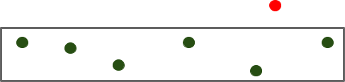

À LA DÉCOUVERTE DU PROPERTY BASED TESTING
Jan 08, 2019
Je suis un développeur convaincu par les bénéfices du TDD, je l’applique au quotidien sur les projets que me confient mes clients. Cela me permet de rapidement valider que mon code a bien le comportement attendu, de le “documenter” et décrivant un cas d’usage et de m’assurer par la suite que je n’introduis aucune régression si je modifie le code testé.
Je fais tout ceci en sachant que je choisis des cas de test qui me semblent représentatifs de l’usage de la fonction, on parle parfois d’Example Based Tests. Si cette méthode est souvent suffisante, il m’arrive parfois de me poser les questions suivantes : Puis-je être sûr que ma fonction est correctement développée si je ne suis pas capable d’identifier un cas qui est représentatif ? Ai-je bien identifié tous les cas limites ?
C’est là qu’il devient intéressant de se pencher sur le property based testing.
C’EST QUOI LE PROPERTY BASED TESTING (PBT) ?
L’idée est simple : identifier et tester des invariants. Comprenez quelque chose qui sera toujours vrai, quelles que soient les données que vous fournissez à votre algorithme.
Pour cela, il faut utiliser un framework qui va générer des données aléatoires et vérifier si l’invariant reste vrai. À chaque exécution de votre suite de tests, celui-ci va tester différentes combinaisons (généralement une centaine). Il est important de noter qu’un test de PBT en succès ne signifie pas que l’implémentation est correcte, il veut juste dire que le framework n’a pas su mettre en défaut l’implémentation. Il est tout à fait possible que celui-ci trouve un cas limite après plusieurs heures, jours, semaines, mois…
OK, ET SI UN TEST ÉCHOUE ?
Si le framework arrive finalement à trouver un cas limite, il existe trois possibilités :
- le code de production n’est pas correct
- la façon dont l’invariant est testé n’est pas correcte
- la compréhension et définition de l’invariant ne sont pas correctes
Il est important d’avoir cette réflexion dès qu’un cas est identifié. Quoi qu’il en soit, le framework est capable de vous donner les données utilisées pour mettre à mal votre code, vous pouvez donc facilement écrire un TU classique pour reproduire le cas.
Un bon framework de PBT est capable de faire du shrinking. Une fois le cas limite identifié, celui-ci va travailler sur les données utilisées pour essayer de les simplifier au maximum tout en reproduisant l’erreur. Ceci nous facilite l’effort d’analyse : imaginez une fonction qui prend une liste en argument, est-ce ma liste de 250 éléments ou juste un élément qui plante mon code ? S’il s’agit d’un élément, le shrinking peut l’isoler.
C’EST QUOI UN INVARIANT ? UN EXEMPLE ?
C’est à la fois tout l’intérêt de cette méthode de test, mais aussi toute sa difficulté. Il faut être capable de raisonner sur le métier de son application pour pouvoir en faire émerger des règles.
Un des premiers exemples que l’on peut rencontrer est celui de l’addition. Celle-ci a trois propriétés :
- L’identité : x + 0 = x avec 0 comme élément neutre
- L’associativité : (a + b) + c = a + (b + c)
- La commutativité : a + b = b + a
Vous retrouvez également ces propriétés avec la multiplication, seul l’élément neutre change. Ces exemples sont très mathématiques (et peu intéressants), mais ce n’est pas le cas de toutes les propriétés, celles-ci peuvent prendre diverses formes.
Petite appartée, les exemples qui suivent sont écrits en F# avec FsCheck. J’ai volontairement choisi un “mauvais” exemple métier puisqu’il est envisageable de tester tous les cas de manière unitaires, mais il me paraît très adapté pour illustrer ce qu’est un invariant.
Pour cet exemple, j’ai décidé d’écrire un petit programme qui doit me dire quelle est la main gagnante entre deux mains de deux cartes. Il s’agit d’une version simplifiée du Poker, si vous ne les connaissez pas, voici les règles :
- si les deux mains sont équivalentes, alors il y a égalité
- une paire gagne sur une main mixte (main avec deux cartes différentes)
- s’il y a deux paires, la paire avec la meilleure carte gagne
- s’il y a deux mains mixtes :
- on compare la carte la plus forte de chaque main
- si les cartes les plus fortes sont identiques, on compare les cartes les moins fortes
- l’As est la meilleure carte et le deux la moins bonne
Je vous laisse quelques secondes pour trouver des invariants…
Vous avez trouvé ? Il s’agit tout simplement de la liste de règles que je viens d’énoncer : celles-ci sont toujours vraies.
Ok, prenons la première règle : “si deux mains sont équivalentes, alors il y a égalité”. Pour cela, je laisse le framework me générer deux cartes aléatoires (seule la valeur de la carte importe ici) qui constituent les deux mains :
[<Property>]
let ``Return draw when hands are equals`` card1 card2 =
getBestHand (card1, card2) (card2, card1) = Draw
On peut aussi tester qu’une paire est toujours meilleure qu’une main mixte. Dans ce cas, on doit s’assurer que les cartes générées par le framework sont différentes. Pour cela, il est possible de poser des conditions qui, si elles sont respectées, permettent l’exécution du cas de test :
[<Property>]
let ``Pair is always better than random hand`` card1 card2 =
card1 <> card2 ==> lazy
(getBestHand (card1, card1) (card1, card2) = Winner (card1, card1)) |@ "Pair as left hand" .&.
(getBestHand (card1, card2) (card2, card2) = Winner (card2, card2)) |@ "Pair as right hand"
Je ne vais pas détailler l’ensemble des cas de test sur cet article, vous pouvez tenter de le refaire de votre côté. Vous pourrez trouver une solution possible sur mon github.
CERTAINES IMPRÉCISIONS Contrairement à un TU, il n’est pas toujours possible de spécifier le résultat exact que l’on attend à l’issue d’un test de PBT. Pour répondre à ceci, j’aime beaucoup la définition proposée par Jessica Kerr.
Un test de PBT défini un cadre métier dont on ne doit pas sortir :

L’idée est d’être moins spécifique sur le résultat, l’important est de s’assurer que les impératifs métiers sont validés. Cela présente l’avantage de laisser une plus grande liberté dans l’implémentation puisque son couplage avec le test est moins important.
Si l’on souhaite tout de même tester un résultat de manière exacte, alors il faudra revenir à un test unitaire avec un résultat hard-codé.
POUR CONCLURE
On peut trouver certains inconvénients au PBT, comme des temps d’exécution un peu plus longs que des tests unitaires classiques, ou encore une plus grande difficulté à écrire ces tests.
Mais vous l’aurez compris, le PBT améliore notre compréhension de l’application puisqu’il pousse à raisonner à des niveaux d’abstraction plus élevés que ce que nous incite à faire des tests unitaires classiques : “une paire est meilleure qu’une main mixte” est à un niveau d’abstraction supérieur à “une paire de 5 est meilleure que la main avec le 8 et le roi”.
Enfin, parce que le code est validé par un grand nombre de cas différents, le PBT améliore également la qualité de notre code ainsi que la confiance que nous avons dans celui-ci.
Si après la lecture de cet article le PBT vous intéresse, vous pouvez également regarder ce talk de Jessica Kerr ou encore celui de Romeu Mourra qui sont pour moi des références sur ce sujet.